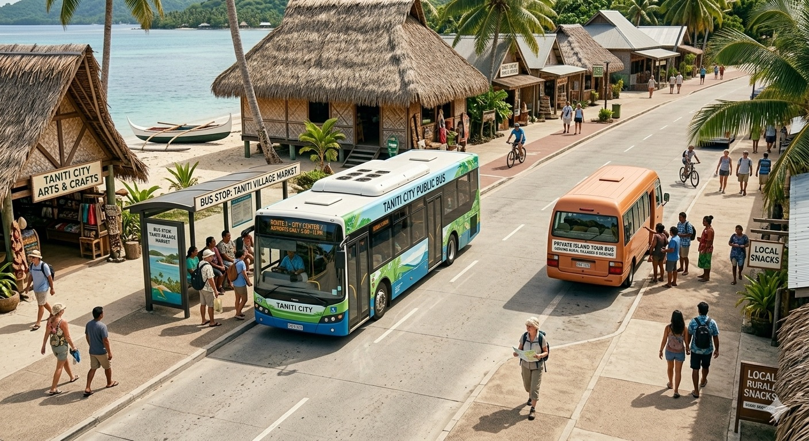
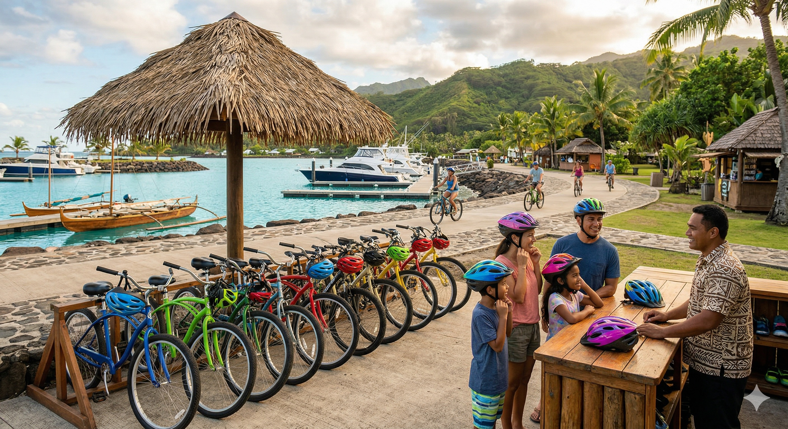
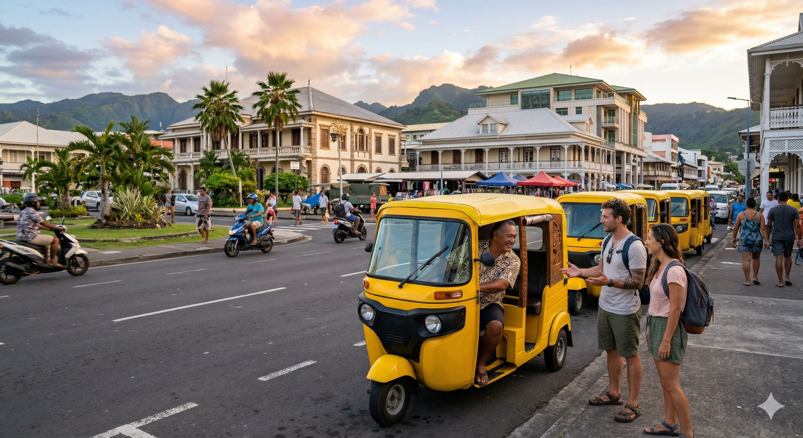
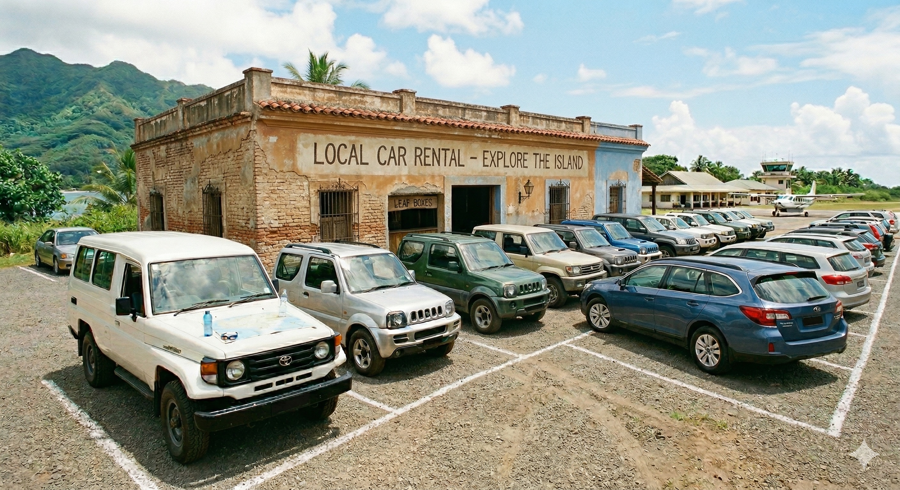

Multiple ways to reach the island, whatever your starting point.
Almost all visitors arrive by air. Taniti is served by a small airport that can accommodate small jets and propeller planes. The airport is currently being expanded so that larger jets will be able to land on the island within the next few years.
A small cruise ship docks in Yellow Leaf Bay one night per week, bringing day visitors to Taniti City and the surrounding beaches. Check with the tourism office for the current weekly schedule.
Taniti is a small island — getting around is easy and affordable.

Public buses serve Taniti City and run daily from 5 a.m. to 11 p.m. Private buses serve the rest of the island. Taniti City is also fairly flat and very walkable — many tourists explore on foot.

Bikes and helmets are available to rent from several vendors across the island. Note: helmets are required by law. The area around Merriton Landing is particularly easy to explore by bike.

Taxis are available throughout Taniti City and are a convenient option for getting between major attractions quickly. Agree on a fare with your driver before departure.

Rental cars are available from a local agency near the airport. This is the best option for exploring the more remote parts of the island at your own pace.